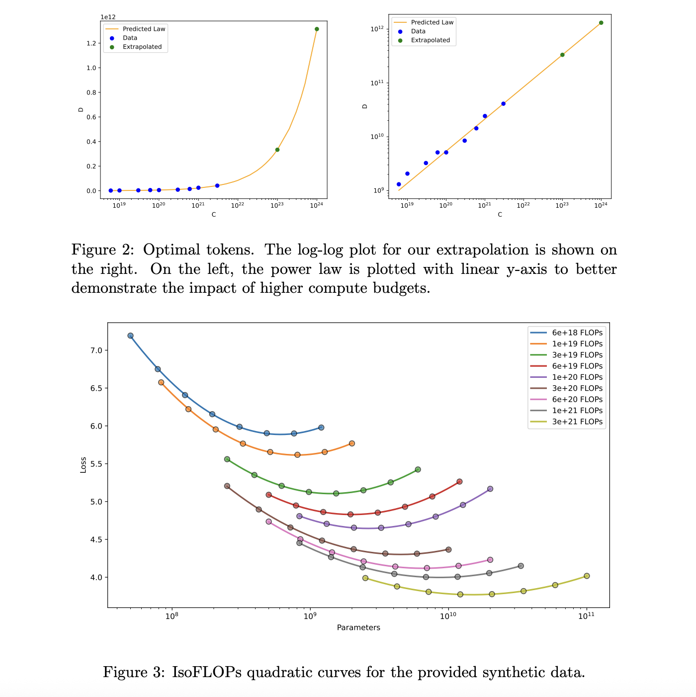

|
|
ImagiNet: A Multi-Content Benchmark for Synthetic Image
Detection
Delyan Boychev, Radostin Cholakov
AAAI 2025 Workshop on Datasets and Evaluators of AI Safety,
2025.
paper ·
dataset
ImagiNet provides 200K high-resolution examples across
photos, paintings, faces, and miscellaneous to improve
generalization of synthetic image detectors. A
SelfCon-trained ResNet‑50 sets strong baselines, reaching
up to 0.99 AUC and 86–95% balanced accuracy with
robustness to compression and resizing.
|
|
|
Fast Matrix Multiplications for Lookup Table-Quantized
LLMs
Han Guo, William Brandon,
Radostin Cholakov, Jonathan Ragan-Kelley,
Eric P. Xing, Yoon Kim
Findings of EMNLP, 2024.
paper
· code ·
models
We introduce FLUTE, a flexible LUT engine that fuses
dequantization and matmul for non-uniform low-bit weights,
reducing unpacking overhead and shared-memory contention.
At batch sizes < 32 and group size 128, FLUTE is 2–4×
faster than strong GEMM baselines, yielding 1.5–2×
end-to-end throughput gains while maintaining competitive
accuracy.
|
|
|
Distributional Quantization of Large Language
Models
Radostin Cholakov, Han Guo, Yoon Kim
CEE RSI Distinguished Papers, 2023.
paper
We quantize LLM weights to 4 bits using block-wise
quantiles from fitted distributions (Gaussian, Beta,
Student’s t) and a numerical optimizer to minimize
reconstruction loss. The approach reduces error over prior
4-bit quantile methods at equal storage and achieves
state-of-the-art perplexity on LLaMA‑2 for WikiText‑2.
|
|
|
Efficient Task-Oriented Dialogue Systems with Response
Selection as an Auxiliary Task
Radostin Cholakov, Todor Kolev
ICNLSP, 2022.
paper
· code
We add auxiliary response-selection tasks (distractor vs.
ground-truth and synthetic vs. ground-truth) to boost
task-oriented dialogue generation. On MultiWOZ 2.1 our
models reach state-of-the-art combined scores
(107.5/108.3) and outperform a baseline 3× larger, with
released code and checkpoints.
|
|
|
AzBuki.ML — Machine learning platform for NLP for the
Slavic languages
Radostin Lozanov Cholakov
Expo Sciences Luxembourg, 2021.
paper
A full-stack NLP platform featuring a 4M-row word-form
dictionary, POS tagger trained on BulTreeBank and BAS'
datasets, comma prediction BiRNN, and a 45K+ polarity
lexicon. Includes experimental embedding and LSTM models
for topic modeling, keyword extraction, and both
abstractive and extractive summarization.
|
|

|
LM from Scratch (CS336):
a1 ·
a2 ·
a3 ·
a4 ·
a5, 2025
Radostin Cholakov
An implementation of a GPT-style model from scratch, along
with tokenization tools, data cleaning pipelines, and
post-training scripts. Implemented for the
CS336 Spring 2025
course at Stanford by Profs. Percy Liang and Tatsu Hashimoto.
|
|
|
LLaDA r1, 2025
Radostin Cholakov, Zeyneb Kaya, Joe Li,
Nicole Ma
A remasking optimization head that learns which token
positions to remask at each step to improve sample quality
and convergence. Winner of the Mercor × Etched × Cognition
hackathon; see the announcement for details. Later, wrote a
CS224R class project
on the topic under the supervision of
Minkai Xu at Prof.
Stefano Ermon's lab.
|
|
|
ImagiNet dataset, 2024
Delyan Boychev, Radostin Cholakov
200K high-resolution examples across photos, paintings,
faces, and miscellaneous for robust synthetic image
detection. Two evaluation tracks (real vs. synthetic;
generator ID) with SelfCon baselines up to 0.99 AUC.
paper
|
|
|
FLUTE, 2024
Han Guo, Radostin Cholakov
Contributed improvements for LUT-quantized LLM matmuls,
including ≤4-bit non-uniform quantization and RTX 4090
support. Released associated LLaMA and Gemma models on
HF.
|
|
|
datasetGPT, 2023
Radostin Cholakov
A command-line tool for programmatically generating textual
and conversational datasets with LLMs, with pluggable
prompting and schemas. Used to build downstream resources
such as
botbots.
|
|
|
GatedTabTransformer in tsai
·
gMLP in tsai, 2022
Radostin Cholakov, Todor Kolev
Implemented state-of-the-art tabular and MLP architectures
in the `tsai` library (2022), with clean APIs and docs for
time series users. Contributions include model definitions,
training recipes, and examples.
|
-
noisy-sentences-dataset
- 550K sentences in 5 languages augmented with noise.
-
diffground
- A mobile app to edit pictures with textual
instructions.
-
Diffusion-LM-TOD
- Pre-train the diffusion model with task-oriented
conversational texts.
-
perper -
Stream-based, horizontally scalable framework for
asynchronous data processing.
-
tfjs-firebase
- Train a TF model with data from Firestore and make
predictions in Cloud Functions.
-
RSG-Chess-mobile
- Custom chess API and app with React Native.
-
star-rating
- A Material Design web component.
|
Built from a simplified template (source).
|
|